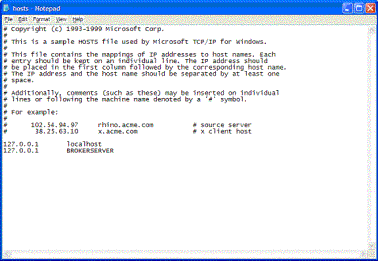
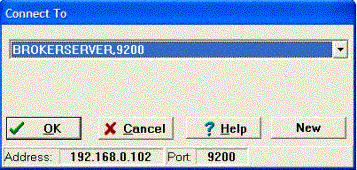
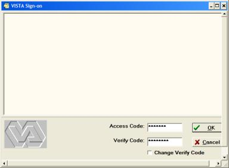

Chapter 2 –Starting CPRS
If you haven't already done so, follow the instructions for installing Vista Platinum in Chapter 1. When you are done with that, follow theses steps. In the text captures examples, the bold red font indicates user entries.
Doing theses steps will only get you a chance to look at what the CPRS GUI chart interface looks like. You will need to continue with the instructions that follow there after to actually be able to use this interface.
Some of the steps in this document may not be necessary for your particular installation, but it covers the steps that are likely to make you ultimately have success, even with difficult installations and unusual configurations with newer or older versions of CPRSChart.exe. Hovering you mouse over the CPRSChart.exe file will show the version of CPRSChart.exe that you are using.
Add CPRS GUI Menu
1. Right click on the Cache Cube, choose Terminal
2. Type in D ^%CD
3. At Namespace, enter VISTA
4. At the VISTA prompt, enter D ^XUP
5. Enter your Access Code and at Option Name enter XUSERED.
6. Use the Tab key to get to the SECONDARY MENU OPTIONS and enter OR CPRS GUI CHART.
7. If there is already and entry you need to replace, type ? and use delete key and then replace the entry with OR CPRS GUI CHART. When you are asked if you are adding this as a secondary menu option, answer yes.
8. Tab down to the command line and enter Exit.
USER>D ^%CD
Namespace: VISTA
You're in namespace VISTA
Default directory is c:\cachesys\mgr\vista\
VISTA>D ^XUP
Setting up programmer environment
Access Code:
Terminal Type set to: C-VT100
Select OPTION NAME: XUSERED
1 XUSEREDIT Edit an Existing User
2 XUSEREDITSELF Edit User Characteristics
CHOOSE 1-2: 1 XUSEREDIT Edit an Existing User
Edit an Existing User
Select NEW PERSON NAME: SM MANAGER,SYSTEM SM
Edit an Existing User
NAME: MANAGER,SYSTEM Page 1 of 4
_______________________________________________________________________________
NAME... MANAGER,SYSTEM INITIAL: SM
TITLE: NICK NAME:
SSN: DOB:
DEGREE: MAIL CODE:
DISUSER: TERMINATION DATE:
Termination Reason:
PRIMARY MENU OPTION: EVE
Select SECONDARY MENU OPTIONS: OR CPRS GUI CHART
Want to edit ACCESS CODE (Y/N): FILE MANAGER ACCESS CODE: @
Want to edit VERIFY CODE (Y/N):
Select DIVISION:
SERVICE/SECTION: IRM
_______________________________________________________________________________
Exit Save Next Page Refresh
Enter a command or '^' followed by a caption to jump to a specific field.
COMMAND: Press <PF1>H for help Insert
VISTA> Exit
Edit Your Hosts File
You will have to edit the hosts file in you Windows directory. The free download version of Cache will only allow you to run CPRS on the same machine as VistA.
1. Find the hosts file in the etc subdirectory in Windows. It will probably be in C:\windows\system32\drivers\etc . There are likely to be other hosts files within the Windows directory or subdirectories (likely 386i subdirectory), too. Edit them all the same way to be sure you won’t have any trouble. CPRSChart.exe uses different hosts files depending upon the version of Windows you have, but this method should satisfy all possibilities. Be sure there is no file extension on the host file, such as .txt making the file name hosts.txt, or it may not function. Some text editors will stick on the extension when you save the file. You will need to view the full file name to be sure that is not causing a problem if you have difficulty. You can usually do that by clicking on Views, Details in in most places that display directory contents.
2. Right click on the hosts file, chose Open and choose Notepad to open it. Add the line 127.0.0.1 BROKERSERVER. Be sure there is a space between the 127.0.0.1 and BROKERSERVER. With this version of CPRS, only the first listing of BROKERSERVER will be recognized. You can “comment out” any lines you would like to save for later use by placing a “#” at the beginning of the line.
3. For some computers, you may also need to add
127.0.0.1 localhost.localdomain
or
127.0.0.1 localhost
4. Choose File-Save and close Notepad. Your file will look something like the one below.

N.B. See the end of this document, alternative connection methods, for other things you can try if this method does not work. Usually, using the hosts file is the most reliable method, especially with older versions of CPRS chart.
1. The link to find the CPRS referred to in this document, OR_30_141.ZIP. To find which version of CPRS you should be using, first us D Q^DI and choose Option 5 which is Inquire To FIle Entries. Choose the Option File and the Option OR CPRS GUI CHART. This will display the correct version of CPRS to use. You can then look up which version matches that *.zip what file at http://www.worldvista.org/~forum/index.php?title=CPRS_Installation; Then obtain the file at ftp site that follows. It may be best to start at the Packages level because of the spaces in the Order Entry-Results Reporting - OR directory name. ftp://ftp.va.gov/vista/Software/Packages/Order Entry-Results Reporting - OR/
MUMPS>
D
Q^DI
Select OPTION:5
INQUIRE TO FILE ENTRIES
OUTPUT FROM WHAT FILE:// OPTION
Select OPTION NAME: OR
CPRS GUI CHART CPRSChart
version 1.0.22.16
ANOTHER ONE:^
2. Place it in any directory you chose on your computer and unzip it. Find the file CPRSChart.exe and put it in a directory where you can access it easily or make a shortcut to it. You can also find the CPRS Patient Record System Setup Guide in this directory or at http://www.va.gov/vdl/ under CPRS.
Give Yourself the Correct Key and Tabs
1. Now enter D Q^DI and choose Option 1 and the NEW PERSON file. When asked which fields to edit choose KEY and CPRS TAB. Type in the key ORES for unrestricted ordering as if you were a physician. (See page 21 in the CPRS Setup Guide for other keys.) Under CPRS TAB, type ?? and you will see two choices. Enter one and the after you complete that, enter the other. They are RPT and COR.
VISTA>D Q^DI
VA FileMan 22.0
Select OPTION: 1 ENTER OR EDIT FILE ENTRIES
INPUT TO WHAT FILE: DEVICES// NEW PERSON
EDIT WHICH FIELD: ALL// KEYS
1 KEYS (multiple)
2 KEYSTROKES FROM LM WP
CHOOSE 1-2: 1 KEYS (multiple)
EDIT WHICH KEYS SUB-FIELD: ALL// (Hit enter here)
THEN EDIT FIELD: CPRS TAB (multiple)
EDIT WHICH CPRS TAB SUB-FIELD: ALL// (Hit enter here)
THEN EDIT FIELD: RESTRICT PATIENT SELECTION
THEN EDIT FIELD: (Hit enter here)
Select NEW PERSON NAME: SM MANAGER,SYSTEM SM Clinical Coordinator
Select KEY: // ORES
...OK? Yes// (Yes)
KEY: ORES//
REVIEW DATE:
Select KEY: // PROVIDER
...OK? Yes// (Yes)
KEY: PROVIDER//
REVIEW DATE:
Select KEY: (Hit enter here)
Select CPRS TAB: // RPT
EFFECTIVE DATE:// MAY 1,2003
EXPIRATION DATE:// MAY 1,2020
CPRS TAB: RPT// COR CPRS GUI "core" tabs.
Are you adding 'RPT' as a new CPRS TAB (the 2ND for this NEW PERSON)? No// Y
EFFECTIVE DATE:// MAY 1,2003
EXPIRATION DATE:// MAY 1,2020
Select CPRS TAB: (Hit enter here)
RESTRICT PATIENT SELECTION:// No NO
Select NEW PERSON NAME:(Hit enter here)
Select OPTION:(Hit enter here)
VISTA>
1. At the VISTA prompt, enter D ^ZTMB to start TaskMan
2. Then start BROKER listening on port 9210 by entering the following at the VISTA prompt: D STRT^XWBTCP(9210) You may choose another port – OpenVista uses 9200.
USER>D ^%CD
Namespace: VISTA
You're in namespace VISTA
Default directory is c:\cachesys\mgr\vista\
VISTA>D ^ZTMB
VISTA>D STRT^XWBTCP(9200)
Start TCP Listener...
Checking if TCP Listener has started...
TCP Listener started successfully.
VISTA>
1. Double Click on CPRSChart.exe. This will bring up a window like the one which follows.

2. Click on the down arrow to see if 127.0.0.1,9210 is there. If not add it by clicking on New. IP address is the 127.0.0.1 and Port is 9210 if you are following the installation instructions from the HardHats.org.

3. The form will now look like this:

4. Sign on with your ACCESS and VERIFY codes in a window that looks like this:

5. If all goes well, when you click OK you will see:
6. If that doesn’t work, try looking at the FAQ page on HardHats.org. The link is:
http://www.hardhats.org/cs/broker/docs/Broker_FAQ.html
Stopping TaskMan and Broker
1. To stop TaskMan, use D STOP^ZTMKU and answer yes to “Are you sure you want to stop TaskMan” and to stopping the submanagers.
2. To stop Broker, use D STOP^XWBTCP(9210).
Other Connection Methods to Try If Necessary
Shortcut Method
1. Right click on CPRSChart.exe and select Create a shortcut.
2. Right click on the shortcut created and click rename. After the name, place s= and the IP address of the Brokerserver and p= and the port that you are using on the broker server. For example:
CPRSChart.exe s=192.168.0.102 p=9200
Registry Editing Method
1. If you haven't edited the registry before, you should read about it and make a backup copy before making any changes. It is a good way to get into a lot of trouble with the functioning of Windows that can be nearly impossible to fix. After starting the registry editor, click on Help and Help Topics and then scroll down in the right hand side of the window to Best Practices to find out how to keep yourself out of trouble.
2. Click on Start, the Run and enter REGEDIT, then click OK.
3. In the left hand window click the plus sign in front of HKEY_LOCAL_MACHINE, then click the plus in front of Software, then Broker and then Servers.
4. Right Click on Servers and then choose Add and choose New and then String Value.
5. Enter this will create a place to edit the name of the string value in the right hand window. Here you should enter BROKERSERVER,9200 or whatever port you are using. It should look like this when you are done.

6. Close the Registry Editor by clicking the X in the upper right hand corner of the window.
7. If you need to edit this entry in the future, change it both with a right click or choosing edit and then MODIFY and also right click and choose RENAME it to match your modifications of the port.
Other Things To Check If You Can’t Connect
1. Check that any firewall software you nave is configured to accept CPRSChart.exe. It is not usually enough to just allow the port you have chosen, such as 9200, or 9210, etc., to be open. It is preferable to allow the program instead because replies to the CPRS from the server come on a random port, and will need to be accepted. Generally, if a program sends information out one port, it will be able to return on another if you configure it for the software.
2. Be sure the Windows XP firewall is not blocking your communication with the server. If you have a software firewall that is protecting you and it is properly configured to protect your machine without the Windows firewall, in Windows XP go to Start, Connections, right click on the connection you are using, then choose Properties, Advanced and uncheck the firewall. It is probably worth checking to see if this same feature has been added to older versions of Windows with an update or service pack by right clicking on your connection with those versions as well.
3. If you have a VPN connection you are able to use only as needed on your system, parts of the software may be activating on startup, and you can change their startup to Manual from Automatic. In Windows XP Pro, to Start, Control Panel, Administrative Tools, Services, the extended services tab will likely be on top, click an stop you VPN service if it has started, then right click your VPN service, choose properties and then change the startup to manual. Remember how to do this because you will need to do the same thing to start the service when you want to connect to your VPN if you change the start-up to manual.
4. Check your router, if you have one, to be sure it is configured to allow CPRS through.
5. Run D ^XTER to see if there is an error that has been captured that will help point you to the problem. If there is and you are new at this, you may have to post a note to the HartHats mailing list to get help. You can find a link to that on www.HardHats.org.
6. As if this version of this document, the only known problems with SP2 for Windows XP is that the region needs to be set to US in the Control Panel for CPRSChart.exe to work.
7. If you are knowledgeable enough to use a packet sniffer such as Ethereal to look at your network communications, you may be able to find out quite a bit using that to help you trouble shoot the problem. The problem will virtually invariably be that you missed something like a parameter was set wrong by mistake (a typo for instance or the wrong case) when you configured your server, or one of the other options listed previously in this document needs to done correctly. If all else fails, email the HardHats.
Last modified 1/9/06 .